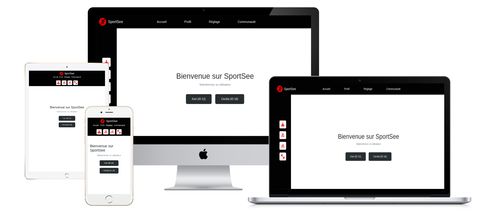

sportsee
SportSee — Tableau de Bord du Profil Utilisateur

📋 Présentation
SportSee est un tableau de bord de suivi des performances sportives qui affiche l'activité de l'utilisateur, les métriques de performance et les indicateurs de santé clés. Construit avec React + TypeScript, il offre la récupération de données en temps réel à partir d'une API backend Node.js.
Périmètre Actuel
- ✅ Mise en page desktop (1024x780px minimum)
- ✅ 15 user stories implémentées
- ⏳ Versions mobiles et tablettes prévues pour le prochain sprint
🚀 Démarrage
Prérequis
- Node.js 16+ et npm
- API backend en cours d'exécution (voir dossier
/Backend)
Installation
# Installer les dépendances
npm install
# Démarrer le serveur de développement
npm run dev
# Construire pour la production
npm run build
# Aperçu de la build production
npm run preview
# Lancer le linting
npm run lint
📁 Structure du Projet
src/
├── components/ # Composants React réutilisables
│ ├── Charts/ # Composants graphiques (BarChart, LineChart, RadarChart, RadialChart)
│ ├── Layout/ # Navigation et mise en page
│ └── MetricCard/ # Cartes de métriques clés
├── pages/ # Composants au niveau des pages
│ ├── Home/
│ └── Profile/ # Page du tableau de bord principal
├── client/ # Services clients API
│ ├── apiClient.ts # Client HTTP utilisant Axios
│ ├── mockClient.ts # Données de test pour le développement
│ └── builders.ts # Transformateurs de données
├── data/ # Données de test
├── loaders/ # React Router loaders pour la récupération de données
├── types/ # Définitions de types TypeScript
├── constants/ # Constantes de l'application
└── helpers/ # Fonctions utilitaires
🎯 Fonctionnalités Clés (15 User Stories)
Mise en Page et Navigation
- US#1 : Barre de navigation horizontale avec liens (Accueil, Profil, Réglage, Communauté)
- US#2 : Barre latérale verticale avec boutons de type d'activité
- US#3 : Mise en page optimisée desktop (1024x780px minimum)
Tableau de Bord Utilisateur
- US#4 : Salutation personnalisée avec le prénom de l'utilisateur
- US#5 : Informations utilisateur du endpoint
/user/:id - US#10 : Cartes de métriques clés (Calories, Protéines, Glucides, Lipides)
Récupération de Données
- US#6 : Données d'activité quotidienne de
/user/:id/activity - US#7 : Durée moyenne des sessions de
/user/:id/average-sessions - US#8 : Score quotidien de
/user/:id - US#9 : Métriques de performance de
/user/:id/performance
Graphiques et Visualisations
- US#11 : BarChart — Activité quotidienne (poids et calories)
- US#12 : LineChart — Tendance de la durée moyenne des sessions
- US#13 : RadarChart — Performance par type d'activité
- US#14 : RadialBarChart — Score de réalisation de l'objectif quotidien
- US#15 : Cartes de métriques — Chiffres clés de santé avec icônes
📚 Documentation
Voir la Documentation Complète de l'API → Généré avec TypeDoc | Signatures de fonction complètes, types de paramètres et exemples
🔌 Intégration API
Sources de Données
L'application récupère les données à partir de 4 endpoints principaux :
// Informations utilisateur
GET /user/:id
→ Retourne : userInfos, score/todayScore, keyData
// Activité quotidienne
GET /user/:id/activity
→ Retourne : sessions[] avec day, kilogram, calories
// Durée moyenne des sessions
GET /user/:id/average-sessions
→ Retourne : sessions[] avec day (1-7), sessionLength
// Données de performance
GET /user/:id/performance
→ Retourne : kind (1-6 mapping), data[] avec value et kind
API Mockée vs Réelle
Développement — Utilise les données de test (src/data/mockData.ts) :
npm run dev
Production — Passe à l'API réelle via la configuration d'environnement dans apiClient.ts
Normalisation des Données
Le client standardise les données avant leur consommation par les composants :
- Normalise le champ
score/todayScoreen un seul champ - Formate les nombres (ex. 1930 → "1,930 kCal")
- Mappe les catégories de performance (cardio, énergie, endurance, force, vitesse, intensité)
📊 Composants Graphiques
ActivityBarChart
Affiche le poids quotidien et la consommation de calories avec des barres à double axe.
- Axe Y gauche : Calories
- Axe Y droit : Poids (kg)
- Tooltip au survol avec les valeurs
SessionLineChart
Affiche la tendance de la durée moyenne des sessions sur la semaine.
- Arrière-plan dégradé animé
- Ligne courbe avec effets au survol
- Indicateur de point de données blanc
PerformanceRadarChart
Graphique radar à 6 axes affichant les performances par catégorie.
- Arrière-plan sombre
- Polygone rempli de rouge
- Étiquettes blanches pour chaque axe
ScoreRadialChart
Indicateur de progression circulaire pour la réalisation de l'objectif quotidien.
- Arc rouge sur fond clair
- Pourcentage au centre
- Extrémités arrondies
🛠️ Directives de Développement
Flux de Données
- Le loader de route récupère les données à partir du client API/mock
- Les composants reçoivent les données via
useLoaderData() - Les données sont formatées et affichées dans les graphiques/cartes
Ajouter de Nouvelles Fonctionnalités
- Créer des composants dans
src/components/ - Utiliser
src/client/pour les appels API (jamais directement depuis les composants) - Définir les types dans
src/types/
Normes de Code
- Utiliser TypeScript pour la sécurité des types
- Les composants sont fonctionnels avec hooks
- Les styles organisés par composant
🔄 Modèles de Données
// Données principales de l'utilisateur
UserMainData {
userInfos: { firstName, lastName, age }
score | todayScore: number (0-1)
nutritionData: { calorieCount, proteinCount, carbohydrateCount, lipidCount }
}
// Sessions d'activité
ActivitySession {
day: number | string
kilogram: number
calories: number
}
// Performance
PerformanceData {
kind: Record<number, string>
data: Array<{ value: number, kind: number }>
}
🌍 Support des Navigateurs
- Navigateurs modernes (ES2020+)
- Navigateurs desktop (Chrome, Firefox, Safari, Edge)
📝 Dépendances
Core
- React 18+ : Framework UI
- React Router : Routage côté client
- TypeScript : Typage statique
Données & HTTP
- Axios : Client HTTP
- Recharts : Bibliothèque de visualisation de graphiques
Build & Dev
- Vite : Outil de build et serveur de développement
- ESLint : Linting de code
📚 Scripts Disponibles
| Commande | Objectif |
|---|---|
npm run dev |
Démarrer le serveur de développement |
npm run build |
Construire pour la production |
npm run preview |
Aperçu de la build production |
npm run lint |
Exécuter ESLint |
npm run lint:fix |
Corriger les problèmes de linting |
🚀 Déploiement
Construire le bundle production :
npm run build
Le dossier dist/ contient la build optimisée prête pour le déploiement.
📖 Prochaines Étapes
- Design responsive mobile et tablette (prochain sprint)
- Implémentations supplémentaires de user stories
- Optimisation des performances
- Tests E2E avec Playwright
📞 Support et Contribution
Pour des questions ou des problèmes, consultez les exigences du projet dans .oc/Kanban.md et les maquettes de conception dans .oc/.
Construit avec ❤️ en utilisant React, TypeScript et Recharts